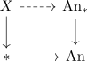
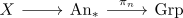

simple anima
Definition
Let $X$ be an anima. Then $X$ is said to be simple, if the pullback

where under Anima coslice as Functors into Anima & unstraightening functor of left fibrations & universal left fibration / universal cocartesian fibration the map

is the zero map on the endomorphisms of the homotopy groups